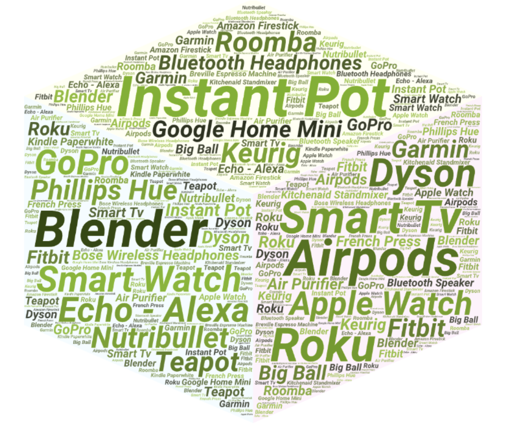
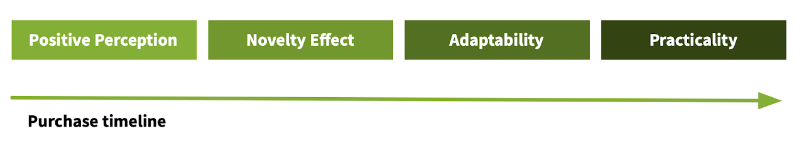

An academic team project for a leading robotics company where we used a triangluation of interviews and a diary study to understand the behaviors and factors influencing people to adopt a new product to supply a self-perceived need.
Figure 1. Some of the products we followed or were mentioned by our participants
Methodology
This study happened over the course of four months during which we followed 20 participants separated in two groups: prospect product buyers and recent product owners. We determined and asigned each participant to one of these groups based on the information we collected on the screening survey, where we identified good leads for candidates and a exploratory interview, where we decided if the person engaged with what we considered to be a “lifestyle product”.
“Lifestyle brands seek to inspire, guide, and motivate people with the goal of their products contributing to the definition of the consumer’s way of life.” —Lifestyle Brands: A Guide to Aspirational Marketing Book by Antonio Marazza and S. Saviolo
The study consisted on five main stages:
- Literature review and interviews with our client to gather requirements. Which resulted in our experiment questions and defined methodology
- Instruments development. Screening survey, diary entries, exploratory and wrap-up interviews
- Pilot with two participants representing our two participant groups. Once we ran the pilot we had to make some adjustments
- Recruiting and diary study run. During which we collected and started interpreting data
- Data analysis and mapping. Resulting in our conclusions and recommendations
Results
Figure 2. Some of the aspects we identified as usage facilitator
We focused our analysis in finding out usage facilitators and inhibitors. Factors such as budget, uncertaintly of use, long-term perspectives and even some ethical considerations like capitalist pushbacks were common themes during our interviews. All these themes were documented, described as a conglomerate and delivered to the client in a final research paper.
Once the study was concluded, a presentation was delivered to the client’s UX team, who will be carrying over our recommendations, which include:
- Replicate the experiment with a narrower product pool
- Reevaluate the MVP, i.e. what’s the minimum common denominator that the product needs in order to work?
Tools used
- [Qualtrics}(https://www.qualtrics.com/) for the recruiting survey and diary entries
- Automator for MacOS to schedule and send scheduled reminders to fill the diary entries
- Miro to contextualize and map data
- Google office suite and Hangouts for remote teamwork collaboration
- Recorders to keep the interview’s audio
Impact and limitations
After the study was wrapped up, we found three areas of improvement. These areas and the complete study was presented and delivery to our client’s UX department. We suggested them to try to replicate the study with a narrower product pool, focusing on their own product.
We also found some areas of improvement for future iterations, specially on the data analysis part. Collect and actually make use of more quantitative data to base our recommendations on hard numbers, this way we would have been able to back our results in a way that made the study easier to replicate and be peer-reviewed.